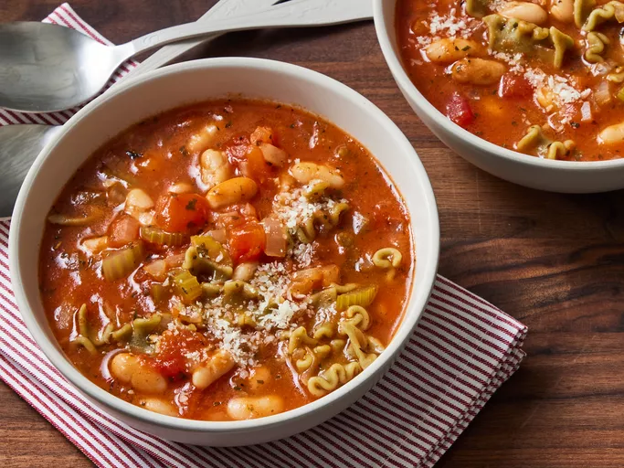

Home
Pastas

Description
Pasta is a type of food typically made from an unleaven dough of wheat flour miexed with water or eggs, and
formed into sheets or other shapes, then cooked by boiling or baking.
It is a staple ingredient in many dishes, originating in Italy where it is made primarily from durum wheat flour.
However, for a gluten-free diet, alternatives such as rice flour or legumes like beans of Ientils are used.
Ingredients
- Semolina flour
- Egg
- Salt
- Water
Steps
- Fill a pot with about 4 litres of water for every 500 grams of Pasta
- Bring the water to a rolling boil over high heat
- Add salt to the boiling water - about 2 tablespoons
- Add pasta to the boiling water and stir ocassionally to prevent sticking.
- Cook the pasta for about a minute less than recomended time on the package, check for donness.
- Drain the pasta in a colander, but save a ladleful of the cooking water to help thicken the sauce.